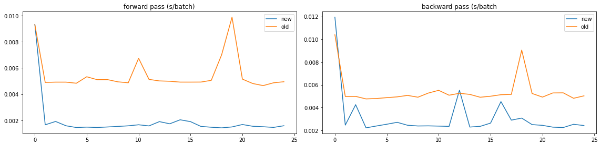

We propose a more efficient implementation of sparse-categorical-crossentropy-loss.
This loss is standard for predicting one-out-of-many classes.
Note that tensorflow implements this loss as a single op in C++, we instead use two basic TF operations: log-sum-exp and lookup.
### implementation + graph visualization
%tensorflow_version 1.x
import tensorflow as tf
import numpy as np
def efficient_sparse_categorical_crossentropy(labels,logits):
with tf.variable_scope('efficient_sparse_crossentropy'):
Z = tf.reduce_logsumexp(logits,-1)
labels_idx = tf.stack([tf.range(tf.shape(labels)[0]),labels],1)
labels_logits = tf.gather_nd(logits,labels_idx)
return Z-labels_logits
tf.reset_default_graph()
N_BATCH,N_CLASS = 512,1000
logits = tf.Variable(tf.random_normal([N_BATCH,N_CLASS]),name='logits')
labels = tf.Variable(tf.random_uniform([N_BATCH],minval=0,maxval=N_CLASS,dtype=tf.int32),name='labels')
loss_new = efficient_sparse_categorical_crossentropy(labels,logits)
init_op = tf.global_variables_initializer()
def show_graph():
%reload_ext tensorboard
!rm -r logs
with tf.Session() as sess:
sess.run(init_op)
writer = tf.summary.FileWriter("logs", sess.graph)
sess.run(loss_new)
%tensorboard --logdir ./logs
writer.close()
show_graph()
TensorFlow is already loaded. Please restart the runtime to change versions.
Reusing TensorBoard on port 6006 (pid 177), started 2:14:42 ago. (Use '!kill 177' to kill it.)
### test correctness - it should match the original TF implementation
loss_old = tf.keras.losses.sparse_categorical_crossentropy(labels,logits,from_logits=True)
init_op = tf.global_variables_initializer()
def test_correct():
with tf.Session() as sess:
for _ in range(5):
sess.run(init_op)
loss_new_val,loss_old_val = sess.run([loss_new,loss_old])
np.testing.assert_array_almost_equal(loss_new_val,loss_old_val,decimal=5)
test_correct()
### compare timings for forward and backward pass
import time
from matplotlib import pyplot as plt
def compare_timings(op_new,op_old):
times_new = []
times_old = []
with tf.Session() as sess:
for times,op in zip([times_new,times_old],[op_new,op_old]):
for _ in range(25):
sess.run(init_op)
start_time = time.time()
_ = sess.run(op)
end_time = time.time()
times.append(end_time-start_time)
return times_new,times_old
def plot_comparison(op_new,op_old,title=''):
times_new,times_old = compare_timings(op_new,op_old)
idx = np.arange(len(times_new))
plt.plot(idx,times_new,label='new')
plt.plot(idx,times_old,label='old')
plt.legend()
plt.title(title)
plt.figure(figsize=(16, 4))
plt.subplot(1, 2, 1)
plot_comparison(loss_new,loss_old,'forward pass (s/batch)')
grad_old = tf.gradients(loss_old,logits)
grad_new = tf.gradients(loss_new,logits)
plt.subplot(1, 2, 2)
plot_comparison(grad_new,grad_old,'backward pass (s/batch')
plt.tight_layout()
plt.show()

### profiling - the new loss is able to exploit parallelization !
options = tf.RunOptions(trace_level=tf.RunOptions.FULL_TRACE)
run_metadata = tf.RunMetadata()
config = tf.ConfigProto()
config.intra_op_parallelism_threads = 2
config.inter_op_parallelism_threads = 2
with tf.Session(config=config) as sess:
for op,name in zip([loss_new,loss_old],['loss_new','loss_old']):
for _ in range(50):
sess.run(init_op)
sess.run(op,None,options,run_metadata)
trace = timeline.Timeline(step_stats=run_metadata.step_stats)
with open('%s.json'%name, 'w') as f:
f.write(trace.generate_chrome_trace_format())
We see the labels and logits are processed in parallel: the sequence Max-Sub-Exp (log-sum-exp tranform) overlaps with Gather (labels lookup)